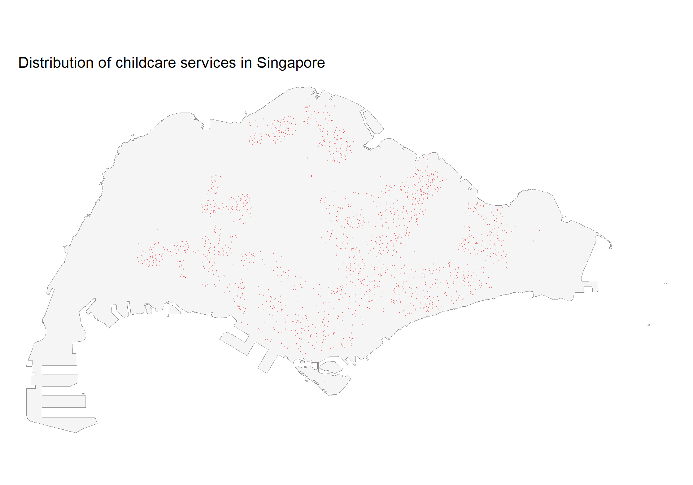
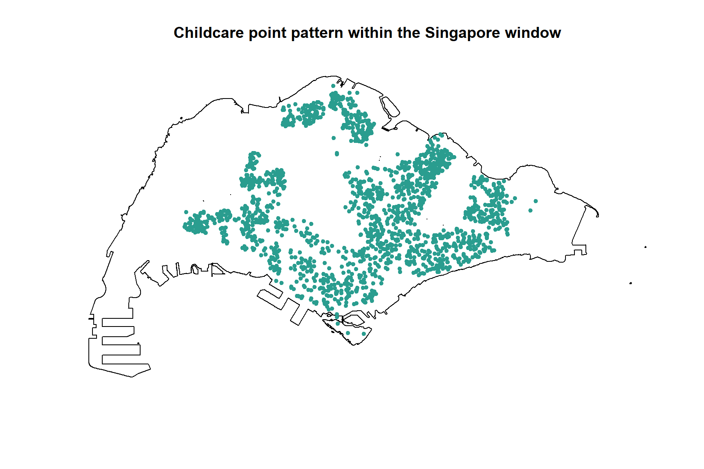
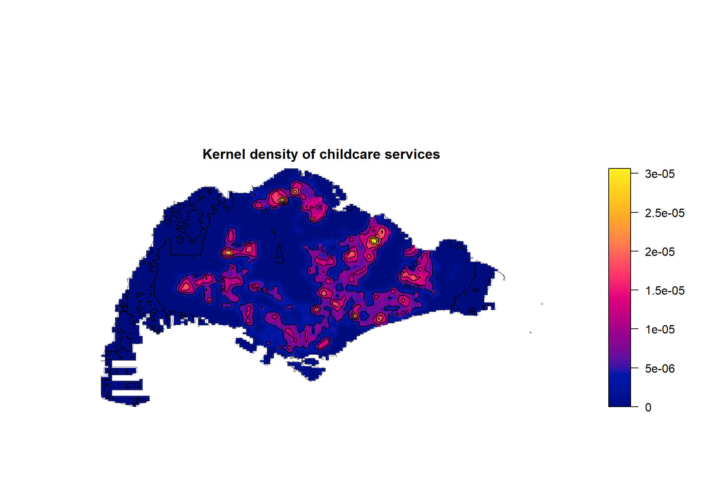
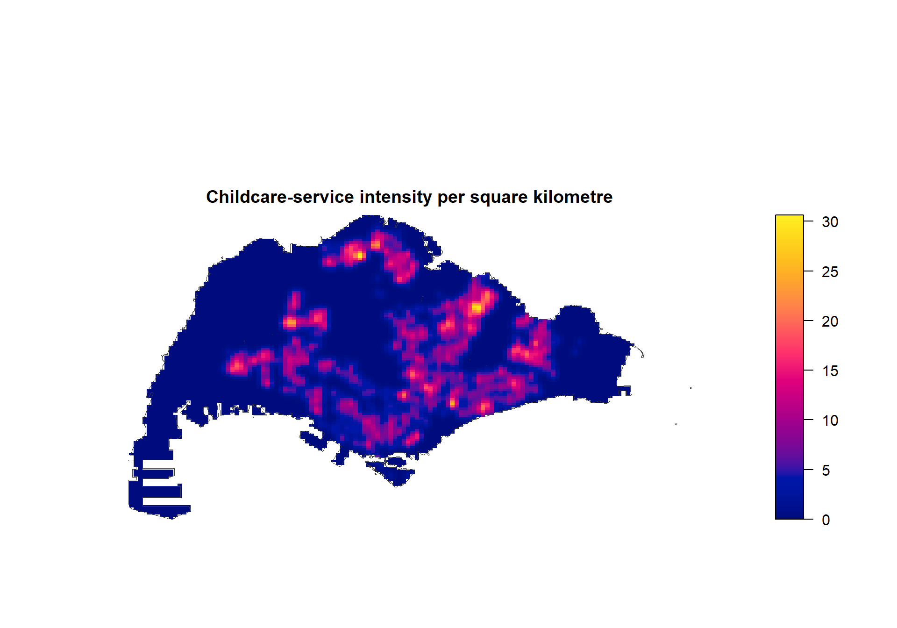
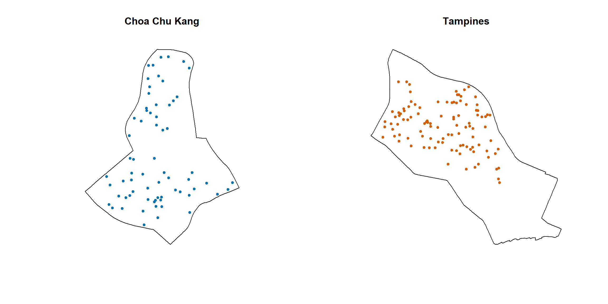

pacman::p_load(
sf,
spatstat,
terra,
tmap,
tidyverse,
knitr
)
tmap_mode("plot")Hands-on Exercise 2(1): First-order Spatial Point Pattern Analysis
Overview
This exercise examines the first-order spatial pattern of childcare services in Singapore. First-order analysis focuses on spatial intensity: whether events are evenly distributed and where their concentration is relatively high.
The workflow is adapted from Chapter 4: First-order Spatial Point Patterns Analysis Methods. I use the Clark–Evans nearest-neighbour test to assess clustering and kernel density estimation (KDE) to visualise variations in point intensity.
Learning objectives
By the end of this exercise, I should be able to:
- prepare point and polygon features for spatial point pattern analysis;
- convert
sfobjects intopppandowinobjects used by spatstat; - apply the Clark–Evans test under Complete Spatial Randomness (CSR);
- construct and interpret kernel density surfaces; and
- compare point intensity within selected planning areas.
Getting started
Loading the R packages
Data used
| File | Geometry | Purpose |
|---|---|---|
ChildCareServices.geojson |
Point | Locations and attributes of childcare services |
MasterPlan2019SubzoneBoundaryNoSea.geojson |
Polygon | Singapore Master Plan 2019 subzone boundaries |
Both files were downloaded from data.gov.sg and stored locally in this exercise’s data/geospatial folder.
Importing and preparing the data
mpsz_sf <- st_read(
"data/geospatial/MasterPlan2019SubzoneBoundaryNoSea.geojson",
quiet = TRUE
) |>
st_zm(drop = TRUE, what = "ZM") |>
st_make_valid() |>
st_transform(3414)
childcare_sf <- st_read(
"data/geospatial/ChildCareServices.geojson",
quiet = TRUE
) |>
st_zm(drop = TRUE, what = "ZM") |>
st_transform(3414)Singapore SVY21 (EPSG:3414) is used because distances and areas are measured in metres. The remote island groups are excluded to create a more meaningful mainland analysis window.
mpsz_clean <- mpsz_sf |>
filter(
SUBZONE_N != "SOUTHERN GROUP",
!PLN_AREA_N %in% c("WESTERN ISLANDS", "NORTH-EASTERN ISLANDS")
)
sg_boundary <- mpsz_clean |>
summarise()
childcare_sg <- childcare_sf |>
st_filter(sg_boundary)
tibble(
dataset = c("Planning subzones", "Childcare services"),
features = c(nrow(mpsz_clean), nrow(childcare_sg)),
epsg = c(st_crs(mpsz_clean)$epsg, st_crs(childcare_sg)$epsg)
) |>
kable(caption = "Prepared geospatial datasets")| dataset | features | epsg |
|---|---|---|
| Planning subzones | 327 | 3414 |
| Childcare services | 1925 | 3414 |
Mapping the point distribution
tm_shape(sg_boundary) +
tm_polygons(fill = "grey96", col = "grey55", lwd = 0.5) +
tm_shape(childcare_sg) +
tm_dots(fill = "#E45756", size = 0.018, fill_alpha = 0.55) +
tm_title("Distribution of childcare services in Singapore") +
tm_layout(frame = FALSE)
Converting the data for spatstat
The observation window defines where the point process could have occurred. I convert the Singapore boundary to an owin object and use the childcare coordinates to create a ppp object.
sg_owin <- as.owin(st_geometry(sg_boundary))
childcare_xy <- st_coordinates(childcare_sg)
childcare_ppp <- ppp(
x = childcare_xy[, "X"],
y = childcare_xy[, "Y"],
window = sg_owin,
checkdup = FALSE
)
tibble(
object = c("Observation window", "Point pattern"),
class = c(class(sg_owin)[1], class(childcare_ppp)[1]),
count = c(NA_integer_, npoints(childcare_ppp))
) |>
kable()| object | class | count |
|---|---|---|
| Observation window | owin | NA |
| Point pattern | ppp | 1925 |
plot(
childcare_ppp,
main = "Childcare point pattern within the Singapore window",
cols = "#2A9D8F",
pch = 20
)
Clark–Evans nearest-neighbour analysis
The Clark–Evans aggregation index compares the observed mean nearest-neighbour distance with the expected distance under CSR:
- \(R < 1\) indicates clustering;
- \(R \approx 1\) is consistent with randomness; and
- \(R > 1\) indicates a regular or dispersed pattern.
The hypotheses are:
- \(H_0\): childcare services follow Complete Spatial Randomness;
- \(H_1\): childcare services are spatially clustered.
Analytical test
ce_test <- clarkevans.test(
childcare_ppp,
correction = "none",
alternative = "clustered"
)
tibble(
aggregation_index_R = unname(ce_test$estimate),
z_statistic = unname(ce_test$statistic),
p_value = ce_test$p.value
) |>
mutate(across(everything(), ~ signif(.x, 4))) |>
kable(caption = "Clark--Evans test for all childcare services")| z_statistic | p_value |
|---|---|
| 0.5353 | 0 |
An index below one indicates that nearest neighbours are closer than would be expected under a random point process. The p-value provides evidence for deciding whether the observed clustering is statistically distinguishable from CSR.
Monte Carlo CSR test
set.seed(1234)
ce_mc <- clarkevans.test(
childcare_ppp,
correction = "none",
alternative = "clustered",
method = "MonteCarlo",
nsim = 99
)
tibble(
simulations = 99,
aggregation_index_R = unname(ce_mc$estimate),
p_value = ce_mc$p.value
) |>
mutate(across(where(is.numeric), ~ signif(.x, 4))) |>
kable(caption = "Monte Carlo Clark--Evans test")| simulations | p_value |
|---|---|
| 99 | 0.01 |
The simulation-based result compares the observed index with 99 random patterns containing the same number of points in the same study window.
Kernel density estimation
KDE transforms the discrete childcare locations into a continuous intensity surface. Areas with larger values represent higher concentrations of childcare services, not necessarily areas with greater demand.
Automatic bandwidth selection
kde_sg <- density(
childcare_ppp,
sigma = bw.diggle,
edge = TRUE,
kernel = "gaussian"
)
selected_bandwidth <- attr(kde_sg, "sigma")
tibble(
method = "Diggle cross-validation",
bandwidth_metres = round(selected_bandwidth, 1)
) |>
kable(caption = "Selected KDE bandwidth")| method | bandwidth_metres |
|---|---|
| Diggle cross-validation | 296 |
plot(
kde_sg,
main = "Kernel density of childcare services",
ribargs = list(las = 1)
)
contour(kde_sg, add = TRUE)
plot(sg_owin, add = TRUE, border = "grey30", lwd = 0.8)
Rescaling intensity
Because SVY21 uses metres, the default KDE values are expressed as points per square metre. Multiplying by one million gives a more readable measure of points per square kilometre.
kde_sg_km2 <- eval.im(kde_sg * 1e6)
summary(kde_sg_km2)real-valued pixel image
128 x 128 pixel array (ny, nx)
enclosing rectangle: [2667.537, 55941.95] x [21448.48, 50256.33] units
dimensions of each pixel: 416 x 225.0614 units
Image is defined on a subset of the rectangular grid
Subset area = 669941827.488091 square units
Subset area fraction = 0.437
Pixel values (inside window):
range = [-4.811475e-15, 30.63699]
integral = 1927788000
mean = 2.877546plot(
kde_sg_km2,
main = "Childcare-service intensity per square kilometre",
ribargs = list(las = 1)
)
plot(sg_owin, add = TRUE, border = "grey25", lwd = 0.8)
Comparing selected planning areas
The helper function below constructs a separate point pattern for any planning area. I use it to compare Choa Chu Kang and Tampines, the two examples highlighted in the chapter.
make_area_pattern <- function(area_name) {
area_boundary <- mpsz_clean |>
filter(PLN_AREA_N == area_name) |>
summarise()
area_points <- childcare_sg |>
st_filter(area_boundary)
area_window <- as.owin(st_geometry(area_boundary))
area_xy <- st_coordinates(area_points)
area_ppp <- ppp(
x = area_xy[, "X"],
y = area_xy[, "Y"],
window = area_window,
checkdup = FALSE
)
list(
boundary = area_boundary,
points = area_points,
window = area_window,
ppp = area_ppp
)
}
cck <- make_area_pattern("CHOA CHU KANG")
tampines <- make_area_pattern("TAMPINES")
tibble(
planning_area = c("Choa Chu Kang", "Tampines"),
childcare_services = c(npoints(cck$ppp), npoints(tampines$ppp)),
area_km2 = c(area.owin(cck$window), area.owin(tampines$window)) / 1e6,
services_per_km2 = childcare_services / area_km2
) |>
mutate(across(where(is.numeric), ~ round(.x, 2))) |>
kable(caption = "Childcare intensity in two planning areas")| planning_area | childcare_services | area_km2 | services_per_km2 |
|---|---|---|---|
| Choa Chu Kang | 74 | 6.12 | 12.10 |
| Tampines | 117 | 20.80 | 5.63 |
par(mfrow = c(1, 2))
plot(cck$ppp, main = "Choa Chu Kang", cols = "#0072B2", pch = 20)
plot(tampines$ppp, main = "Tampines", cols = "#D55E00", pch = 20)
par(mfrow = c(1, 1))area_tests <- list(
"Choa Chu Kang" = cck$ppp,
"Tampines" = tampines$ppp
) |>
imap_dfr(function(pattern, area_name) {
result <- clarkevans.test(
pattern,
correction = "none",
alternative = "clustered"
)
tibble(
planning_area = area_name,
R = unname(result$estimate),
p_value = result$p.value
)
})
area_tests |>
mutate(across(where(is.numeric), ~ signif(.x, 4))) |>
kable(caption = "Clark--Evans results by planning area")| planning_area | p_value |
|---|---|
| Choa Chu Kang | 0.004433 |
| Tampines | 0.000000 |
Reflection
This exercise shows that point density and point interaction are different ideas. The Clark–Evans test summarises nearest-neighbour spacing, while KDE reveals where intensity is high or low. KDE results are sensitive to the bandwidth and study boundary, so hotspot-looking areas should be interpreted as exploratory evidence rather than as proof of an underlying cause.